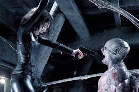

UNDERWORLD R18
Sypnosis:
Under cover of night, vampires engage in an age-old battle with their sworn enemies, the Lycans, a clan of violent werewolves. Selene (Kate Beckinsale), a vampire orphaned in the wake of a bloody Lycan attack, works for the vampire clan as a trained killer. When the Lycans take a mysterious interest in Michael Corvin (Scott Speedman), an exceptional mortal doctor, Selene struggles to save him from Lucian (Michael Sheen), a ruthless Lycan leader hellbent on ending the vampire bloodline.
Actors:
- Kate Beckinsale
- Michale Sheen
- Scott Speedman
- Bill Nighy
- Sophia Myles
- Kevin Grevioux
- Danny McBride
- Shane Brolly
- Zita Gorog
- Scott McElroy
- Wentworth Miller
- Erwin Leder
- Robbie gee
- Jazmin Dammak